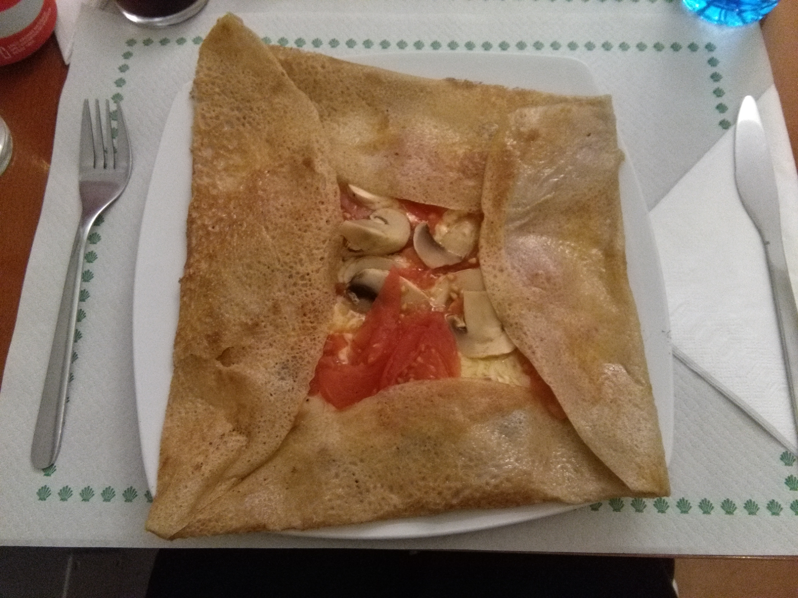

Gastronomie
Sesión 1

Dirigeons-nous maintenant à l’ouest de la France, en Bretagne. Cette région pleine de contrastes entre terre et mer, l’est aussi dans sa gastronomie. Tout le monde connaît les crêpes mais que sont les galettes bretonnes ?
Régi par la licence Creative Commons: Licence d'attribution en partage identique 4.0